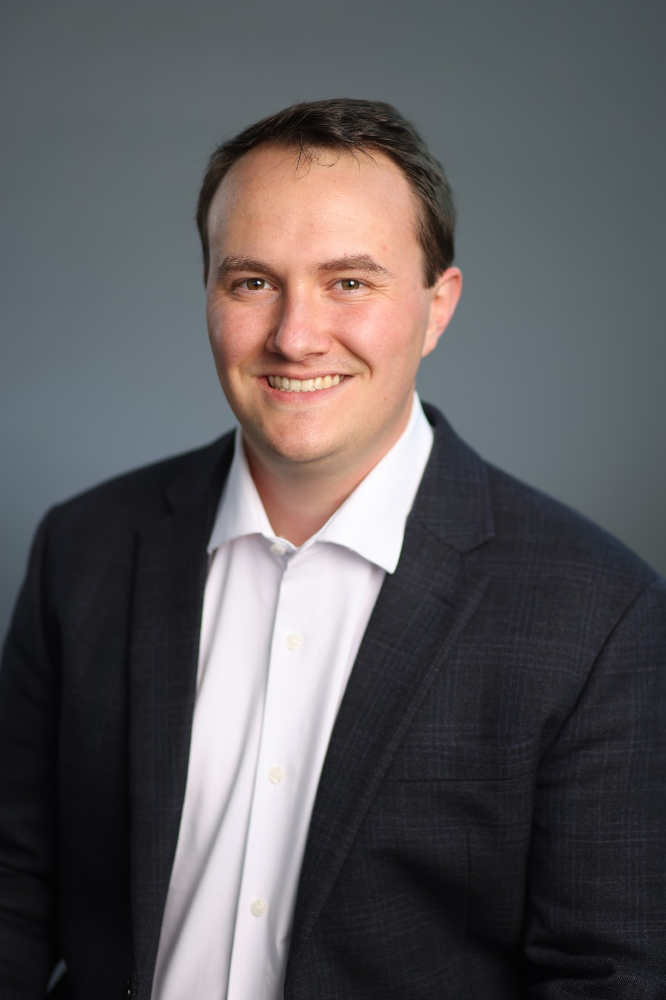

Ph.D. Candidate · Mathematics · Purdue University
I work on inverse problems in computational imaging, specifically developing methods to recover three-dimensional turbulence in wind tunnels based on how it distorts laser light. My research is carried out with the Air Force Research Laboratory and the Air Force Institute of Technology. I plan to graduate in the Fall of 2027.

I'm a Ph.D. candidate in mathematics at Purdue University, advised by Gregery Buzzard and Charles Bouman. This summer I'm an ORISE Doctoral Research Fellow at the Air Force Institute of Technology, continuing work I began as an AFRL Scholar. Before Purdue I studied applied mathematics at Hillsdale College, with a minor in Latin and a lasting interest in philosophy. I grew up in Pemberville, Ohio. Outside of research, I spend my time reading, biking, and with my family.